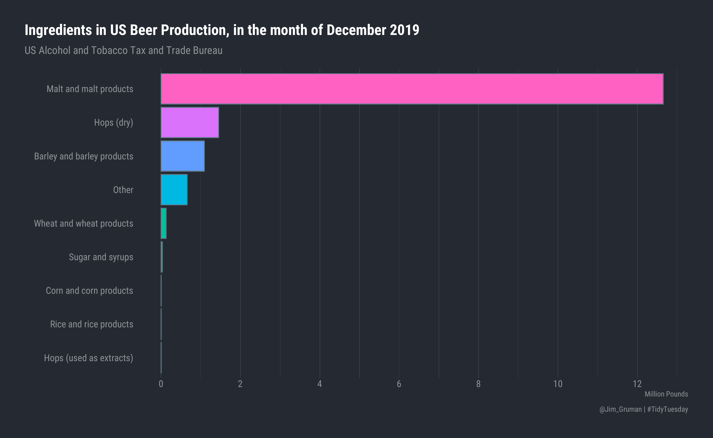
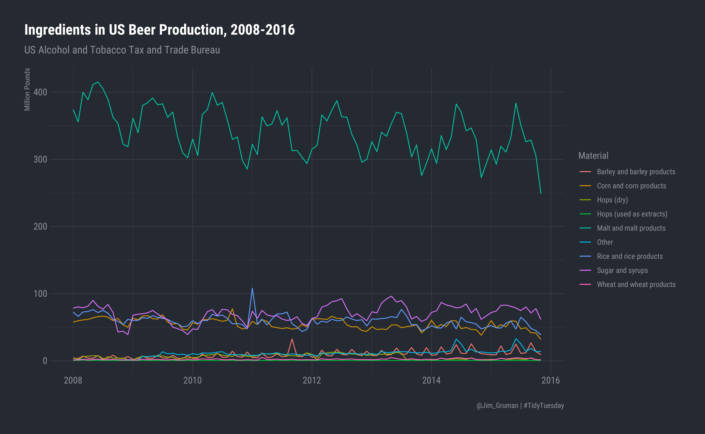
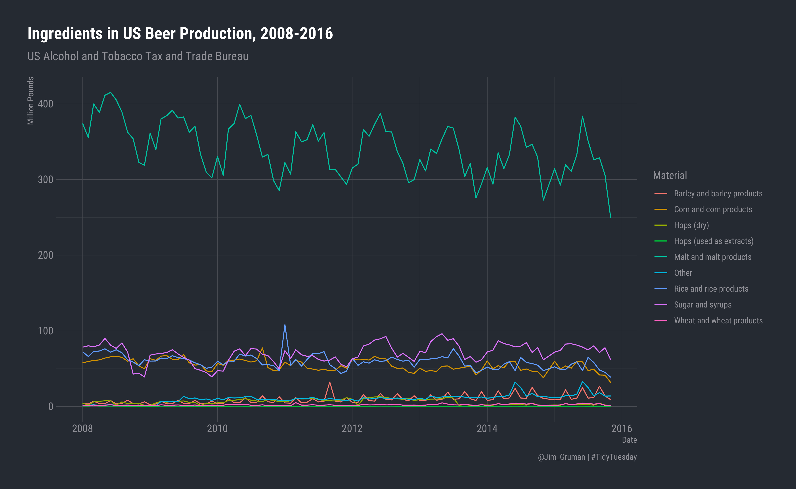
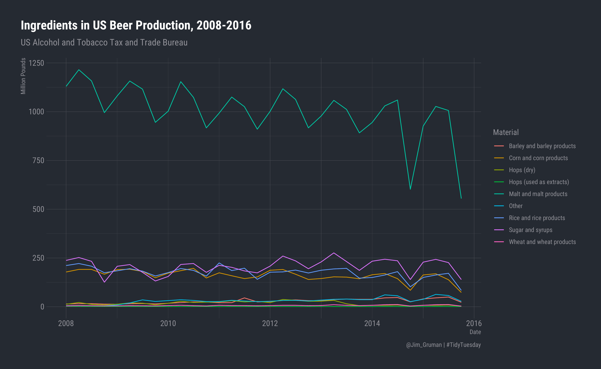
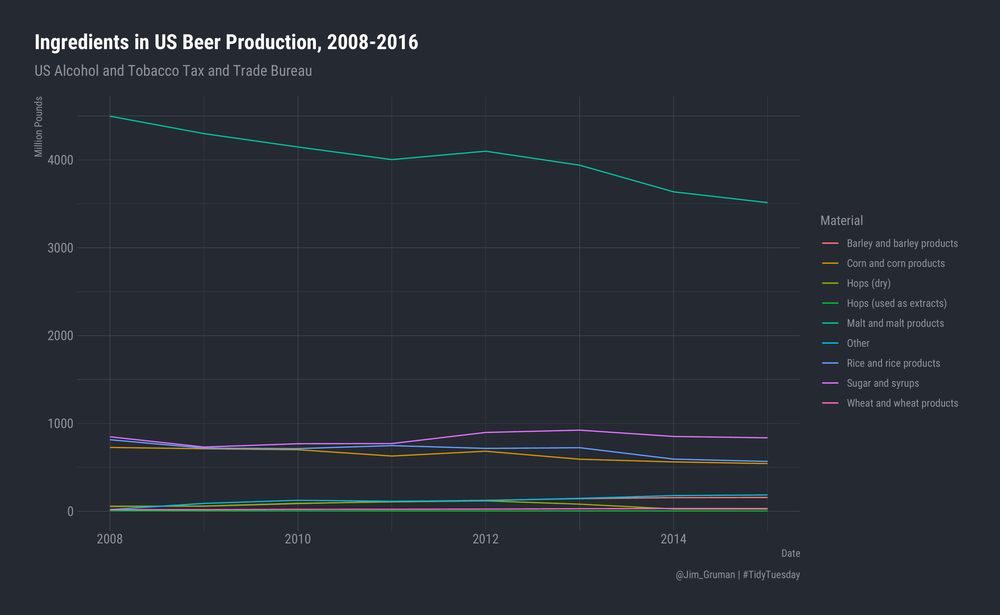
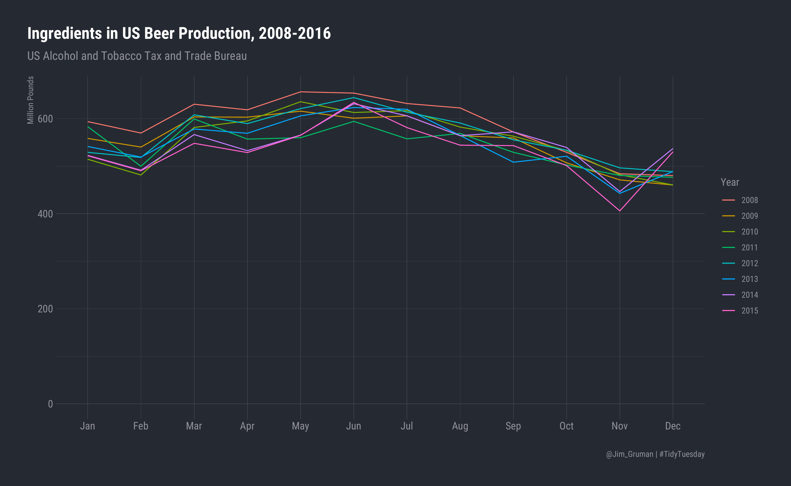
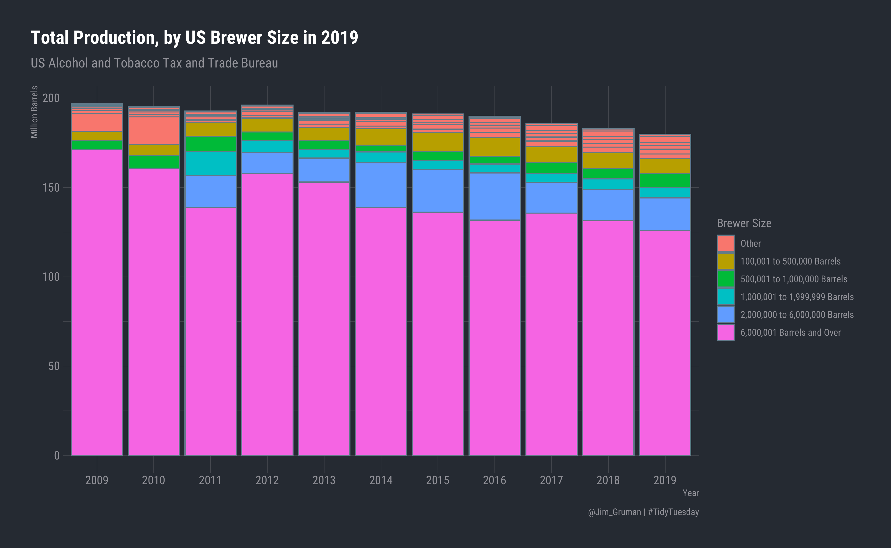

BeerProduction
Jim Gruman
March 31, 2020
Last updated: 2020-10-11
Checks: 7 0
Knit directory: myTidyTuesday/
This reproducible R Markdown analysis was created with workflowr (version 1.6.2). The Checks tab describes the reproducibility checks that were applied when the results were created. The Past versions tab lists the development history.
Great! Since the R Markdown file has been committed to the Git repository, you know the exact version of the code that produced these results.
Great job! The global environment was empty. Objects defined in the global environment can affect the analysis in your R Markdown file in unknown ways. For reproduciblity it’s best to always run the code in an empty environment.
The command set.seed(20200907) was run prior to running the code in the R Markdown file. Setting a seed ensures that any results that rely on randomness, e.g. subsampling or permutations, are reproducible.
Great job! Recording the operating system, R version, and package versions is critical for reproducibility.
Nice! There were no cached chunks for this analysis, so you can be confident that you successfully produced the results during this run.
Great job! Using relative paths to the files within your workflowr project makes it easier to run your code on other machines.
Great! You are using Git for version control. Tracking code development and connecting the code version to the results is critical for reproducibility.
The results in this page were generated with repository version 9a61ca8. See the Past versions tab to see a history of the changes made to the R Markdown and HTML files.
Note that you need to be careful to ensure that all relevant files for the analysis have been committed to Git prior to generating the results (you can use wflow_publish or wflow_git_commit). workflowr only checks the R Markdown file, but you know if there are other scripts or data files that it depends on. Below is the status of the Git repository when the results were generated:
Ignored files:
Ignored: .Rhistory
Ignored: .Rproj.user/
Untracked files:
Untracked: figure/
Note that any generated files, e.g. HTML, png, CSS, etc., are not included in this status report because it is ok for generated content to have uncommitted changes.
These are the previous versions of the repository in which changes were made to the R Markdown (analysis/BeerProduction.Rmd) and HTML (docs/BeerProduction.html) files. If you’ve configured a remote Git repository (see ?wflow_git_remote), click on the hyperlinks in the table below to view the files as they were in that past version.
| File | Version | Author | Date | Message |
|---|---|---|---|---|
| Rmd | 9a61ca8 | opus1993 | 2020-10-11 | wflow_publish("analysis/*.Rmd") |
| html | 23f8381 | opus1993 | 2020-10-10 | Build site. |
| html | caff775 | opus1993 | 2020-09-08 | Build site. |
| Rmd | 0704459 | opus1993 | 2020-09-08 | wflow_publish(“analysis/BeerProduction.Rmd”) |
| html | 6abca25 | opus1993 | 2020-09-07 | Build site. |
| Rmd | a99d4a7 | opus1993 | 2020-09-07 | wflow_publish(“analysis/BeerProduction.Rmd”) |
library(tidyverse)
library(lubridate)
library(tidymetrics)
library(GGally)
library(gghighlight)
library(tidymodels)
theme_set(hrbrthemes::theme_ft_rc())Import this week’s data
brewing_materials <- readr::read_csv("https://raw.githubusercontent.com/rfordatascience/tidytuesday/master/data/2020/2020-03-31/brewing_materials.csv") %>%
mutate(date = ymd(paste0(year, "/", month, "/1")))
beer_taxed <- readr::read_csv("https://raw.githubusercontent.com/rfordatascience/tidytuesday/master/data/2020/2020-03-31/beer_taxed.csv")
brewer_size <- readr::read_csv("https://raw.githubusercontent.com/rfordatascience/tidytuesday/master/data/2020/2020-03-31/brewer_size.csv")
beer_states <- readr::read_csv("https://raw.githubusercontent.com/rfordatascience/tidytuesday/master/data/2020/2020-03-31/beer_states.csv")Exploration
skimr::skim(beer_states)
# 19 year/states with missing barrels
skimr::skim(brewing_materials)
table(brewing_materials$type)
# opportunity to examine the proportional trends of Corn vresus Sugar/syrups use
skimr::skim(beer_taxed)
skimr::skim(brewer_size)
table(brewer_size$brewer_size)Total all barrels produced by state per year (regardless of type)
all_barrels <-
beer_states %>%
na.omit() %>%
filter(state != "total") %>%
group_by(state, year) %>%
summarise(barrels = sum(barrels))The top 5 states with largest increase in barrels from 2008 to 2019
increase_states <-
all_barrels %>%
mutate(total_barrels = cumsum(barrels)) %>%
filter(year %in% c(2008, 2019)) %>%
mutate(pct_chg = (total_barrels - lag(total_barrels)) / lag(total_barrels)) %>%
ungroup() %>%
top_n(5, pct_chg) %>%
pull(state)
increase_states %>%
knitr::kable()| x |
|---|
| AL |
| CT |
| ND |
| RI |
| TN |
# Lets get the state names
states <- tibble(state = state.abb, state_name = state.name)
beer_df <-
beer_states %>%
na.omit() %>%
filter(state != "total") %>%
group_by(state, year) %>%
summarise(barrels = sum(barrels)) %>%
mutate(total_barrels = cumsum(barrels)) %>%
left_join(states, by = "state")Lets have a look at the materials trends. What ingredients are used in beer production?
p1 <- brewing_materials %>%
filter(
!str_detect(material_type, "Total"),
!(month == 12 & year %in% 2014:2015)
) %>% # remove the subtotals) %>%
filter(date == max(date)) %>%
mutate(type = fct_reorder(type, month_current)) %>%
ggplot(aes(type, month_current / 1000000, fill = type)) +
geom_col() +
scale_y_continuous(breaks = scales::pretty_breaks()) +
coord_flip() +
theme(
plot.title.position = "plot",
legend.position = "",
panel.grid.major.y = element_blank()
) +
labs(
x = "",
y = "Million Pounds",
title = "Ingredients in US Beer Production, in the month of December 2019",
subtitle = "US Alcohol and Tobacco Tax and Trade Bureau",
caption = "@Jim_Gruman | #TidyTuesday"
)
ggsave(
filename = "docs/assets/beer-1.pdf",
plot = p1,
width = 12,
height = 7.402,
device = cairo_pdf
)
pdftools::pdf_convert(
pdf = "docs/assets/beer-1.pdf",
format = "png",
dpi = 300,
filenames = "docs/assets/beer-1.png",
verbose = FALSE
)[1] "docs/assets/beer-1.png"knitr::include_graphics("assets/beer-1.png", error = FALSE)
p2 <- brewing_materials %>%
filter(
!str_detect(type, "Total"), year < 2016,
!(month == 12 & year %in% 2014:2015)
) %>% # remove the subtotals
ggplot(aes(date, month_current / 1000000, color = type)) +
geom_line() +
labs(
x = "",
y = "Million Pounds",
color = "Material",
title = "Ingredients in US Beer Production, 2008-2016",
subtitle = "US Alcohol and Tobacco Tax and Trade Bureau",
caption = "@Jim_Gruman | #TidyTuesday"
) +
theme(plot.title.position = "plot")
ggsave(
filename = "docs/assets/beer-2.pdf",
plot = p2,
width = 12,
height = 7.402,
device = cairo_pdf
)
pdftools::pdf_convert(
pdf = "docs/assets/beer-2.pdf",
format = "png",
dpi = 300,
filenames = "docs/assets/beer-2.png",
verbose = FALSE
)[1] "docs/assets/beer-2.png"knitr::include_graphics("assets/beer-2.png", error = FALSE)
Tidymetrics
library(tidymetrics)
brewing_summarized <- brewing_materials %>%
rename(material = type) %>%
filter(
!str_detect(material_type, "Total"), year < 2016,
!(month == 12 & year %in% 2014:2015)
) %>%
tidymetrics::cross_by_dimensions(material_type, material) %>% # duplicates the data to summarize it
cross_by_periods(c("month", "quarter", "year")) %>%
summarize(total_pounds = sum(month_current)) %>%
ungroup()
p3 <- brewing_summarized %>%
filter(material_type != "All", material != "All", period == "month") %>%
ggplot(aes(date, total_pounds / 1000000, color = material)) +
geom_line() +
labs(
x = "Date",
y = "Million Pounds",
color = "Material",
title = "Ingredients in US Beer Production, 2008-2016",
subtitle = "US Alcohol and Tobacco Tax and Trade Bureau",
caption = "@Jim_Gruman | #TidyTuesday"
) +
theme(plot.title.position = "plot")
ggsave(
filename = "docs/assets/beer-3.pdf",
plot = p3,
width = 12,
height = 7.402,
device = cairo_pdf
)
pdftools::pdf_convert(
pdf = "docs/assets/beer-3.pdf",
format = "png",
dpi = 300,
filenames = "docs/assets/beer-3.png",
verbose = FALSE
)[1] "docs/assets/beer-3.png"knitr::include_graphics("assets/beer-3.png", error = FALSE)
p4 <- brewing_summarized %>%
filter(material_type != "All", material != "All", period == "quarter") %>%
ggplot(aes(date, total_pounds / 1000000, color = material)) +
geom_line() +
labs(
x = "Date",
y = "Million Pounds",
color = "Material",
title = "Ingredients in US Beer Production, 2008-2016",
subtitle = "US Alcohol and Tobacco Tax and Trade Bureau",
caption = "@Jim_Gruman | #TidyTuesday"
) +
theme(plot.title.position = "plot")
ggsave(
filename = "docs/assets/beer-4.pdf",
plot = p4,
width = 12,
height = 7.402,
device = cairo_pdf
)
pdftools::pdf_convert(
pdf = "docs/assets/beer-4.pdf",
format = "png",
dpi = 300,
filenames = "docs/assets/beer-4.png",
verbose = FALSE
)[1] "docs/assets/beer-4.png"knitr::include_graphics("assets/beer-4.png", error = FALSE)
p5 <- brewing_summarized %>%
filter(material_type != "All", material != "All", period == "year") %>%
ggplot(aes(date, total_pounds / 1000000, color = material)) +
geom_line() +
labs(
x = "Date",
y = "Million Pounds",
color = "Material",
title = "Ingredients in US Beer Production, 2008-2016",
subtitle = "US Alcohol and Tobacco Tax and Trade Bureau",
caption = "@Jim_Gruman | #TidyTuesday"
) +
theme(plot.title.position = "plot")
ggsave(
filename = "docs/assets/beer-5.pdf",
plot = p5,
width = 12,
height = 7.402,
device = cairo_pdf
)
pdftools::pdf_convert(
pdf = "docs/assets/beer-5.pdf",
format = "png",
dpi = 300,
filenames = "docs/assets/beer-5.png",
verbose = FALSE
)[1] "docs/assets/beer-5.png"knitr::include_graphics("assets/beer-5.png", error = FALSE)
p6 <- brewing_materials %>%
filter(material_type == "Total Used", year < 2016) %>%
mutate(month = factor(month, labels = month.abb)) %>%
ggplot(aes(
x = month,
y = month_current / 1000000,
group = factor(year),
color = factor(year)
)) +
geom_line() +
expand_limits(y = 0) +
labs(
x = "",
y = "Million Pounds",
color = "Year",
title = "Ingredients in US Beer Production, 2008-2016",
subtitle = "US Alcohol and Tobacco Tax and Trade Bureau",
caption = "@Jim_Gruman | #TidyTuesday"
) +
scale_y_continuous(labels = scales::comma_format()) +
theme(plot.title.position = "plot")
ggsave(
filename = "docs/assets/beer-6.pdf",
plot = p6,
width = 12,
height = 7.402,
device = cairo_pdf
)
pdftools::pdf_convert(
pdf = "docs/assets/beer-6.pdf",
format = "png",
dpi = 300,
filenames = "docs/assets/beer-6.png",
verbose = FALSE
)[1] "docs/assets/beer-6.png"knitr::include_graphics("assets/beer-6.png", error = FALSE)
remotes::install_github("ramnathv/shinymetrics")
remotes::install_github("ramnathv/shinybones")
brewing_metrics <- create_metrics(brewing_summarized)
library(shinymetrics)
# interactive plotly visualization of grouped time multi-dimensional BI
preview_metric(brewing_metrics$production_NA_total_pounds)
# change the dropdown from "last year" to "all time" because 2019 is not in this datasetp7 <- brewer_size %>%
filter(brewer_size != "Total", !is.na(total_barrels)) %>%
mutate(
brewer_size = fct_lump(brewer_size, 5, w = total_barrels),
barrel_number = coalesce(parse_number(as.character(brewer_size)), 1),
brewer_size = fct_reorder(brewer_size, barrel_number)
) %>%
ggplot(aes(as_factor(year), total_barrels / 1000000, fill = brewer_size)) +
geom_col() +
scale_y_continuous(labels = scales::comma_format()) +
labs(
x = "Year",
y = "Million Barrels",
fill = "Brewer Size",
title = "Total Production, by US Brewer Size in 2019",
subtitle = "US Alcohol and Tobacco Tax and Trade Bureau",
caption = "@Jim_Gruman | #TidyTuesday"
) +
theme(plot.title.position = "plot")
ggsave(
filename = "docs/assets/beer-7.pdf",
plot = p7,
width = 12,
height = 7.402,
device = cairo_pdf
)
pdftools::pdf_convert(
pdf = "docs/assets/beer-7.pdf",
format = "png",
dpi = 300,
filenames = "docs/assets/beer-7.png",
verbose = FALSE
)[1] "docs/assets/beer-7.png"knitr::include_graphics("assets/beer-7.png", error = FALSE)
Where is Beer produced?
ggplot(beer_df, aes(year, barrels, group = state)) +
geom_line(aes(color = state), show.legend = F) +
gghighlight(
state %in% increase_states,
label_key = state_name,
label_params = list(
size = 3, family = "Arial Narrow",
fill = "grey95", alpha = 0.9,
label.r = 0.1, segment.alpha = 0
),
unhighlighted_params = list(color = "grey88")
) +
labs(
x = "Year",
y = "Total number of barrels produced",
title = "States with the Largest Increase in Beer Production, 2008-2019",
subtitle = "US Alcohol and Tobacco Tax and Trade Bureau",
caption = "@Jim_Gruman | #TidyTuesday"
) +
scale_x_continuous(breaks = scales::pretty_breaks()) +
scale_y_log10(labels = scales::label_number()) +
theme(
panel.grid = element_blank(),
panel.grid.major = element_blank(),
plot.title.position = "plot"
)
beer_states %>%
count(type, sort = TRUE, wt = barrels) %>%
knitr::kable()| type | n |
|---|---|
| Bottles and Cans | 3790640995 |
| Kegs and Barrels | 413060363 |
| On Premises | 32942944 |
beer_states %>%
group_by(year) %>%
summarize(barrels = sum(barrels, na.rm = TRUE)) %>%
knitr::kable()| year | barrels |
|---|---|
| 2008 | 369365660 |
| 2009 | 366722996 |
| 2010 | 362423267 |
| 2011 | 356149025 |
| 2012 | 360802673 |
| 2013 | 356172814 |
| 2014 | 354773849 |
| 2015 | 352082099 |
| 2016 | 348860505 |
| 2017 | 341358612 |
| 2018 | 333778335 |
| 2019 | 334154466 |
# Who consumes beer on premises?
beer_states %>%
filter(type == "On Premises", year == max(year), state != "total") %>%
slice_max(order_by = barrels, n = 10) %>%
knitr::kable()| state | year | barrels | type |
|---|---|---|---|
| CA | 2019 | 399693.0 | On Premises |
| NC | 2019 | 222608.5 | On Premises |
| TX | 2019 | 196218.4 | On Premises |
| FL | 2019 | 182784.1 | On Premises |
| CO | 2019 | 175934.3 | On Premises |
| VA | 2019 | 163800.7 | On Premises |
| NY | 2019 | 150616.8 | On Premises |
| WA | 2019 | 144278.0 | On Premises |
| OH | 2019 | 132029.7 | On Premises |
| MI | 2019 | 131484.7 | On Premises |
beer_states %>%
filter(year == max(year), state != "total") %>%
group_by(state) %>%
mutate(percent = barrels / sum(barrels)) %>%
filter(type == "On Premises") %>%
ungroup() %>%
slice_max(order_by = percent, n = 10) %>%
knitr::kable()| state | year | barrels | type | percent |
|---|---|---|---|---|
| ND | 2019 | 10218.59 | On Premises | 0.9824301 |
| OK | 2019 | 21128.75 | On Premises | 0.9250823 |
| SD | 2019 | 9386.07 | On Premises | 0.7221454 |
| WV | 2019 | 8301.94 | On Premises | 0.6731332 |
| AL | 2019 | 47160.08 | On Premises | 0.6594634 |
| SC | 2019 | 53161.06 | On Premises | 0.6250491 |
| IA | 2019 | 61429.37 | On Premises | 0.5601052 |
| MS | 2019 | 11912.45 | On Premises | 0.5553916 |
| DC | 2019 | 16347.97 | On Premises | 0.5468092 |
| AR | 2019 | 16568.73 | On Premises | 0.5421403 |
beer_states %>%
filter(year == max(year), state != "total") %>%
group_by(state) %>%
mutate(percent = barrels / sum(barrels)) %>%
filter(type == "Bottles and Cans") %>%
ungroup() %>%
slice_max(order_by = percent, n = 10) %>%
knitr::kable()| state | year | barrels | type | percent |
|---|---|---|---|---|
| TN | 2019 | 2641268 | Bottles and Cans | 0.9653619 |
| GA | 2019 | 12855949 | Bottles and Cans | 0.9586046 |
| MO | 2019 | 11393002 | Bottles and Cans | 0.9362237 |
| TX | 2019 | 16934638 | Bottles and Cans | 0.9311265 |
| NY | 2019 | 7720585 | Bottles and Cans | 0.9278049 |
| OH | 2019 | 16176334 | Bottles and Cans | 0.9151082 |
| CO | 2019 | 17351292 | Bottles and Cans | 0.9085595 |
| WI | 2019 | 8353029 | Bottles and Cans | 0.9052277 |
| VA | 2019 | 12829544 | Bottles and Cans | 0.9048032 |
| NH | 2019 | 2276766 | Bottles and Cans | 0.8768696 |
beer_states %>%
filter(year == max(year), state != "total") %>%
group_by(state) %>%
mutate(percent = barrels / sum(barrels)) %>%
filter(type == "Kegs and Barrels") %>%
ungroup() %>%
slice_max(order_by = percent, n = 10) %>%
knitr::kable()| state | year | barrels | type | percent |
|---|---|---|---|---|
| ME | 2019 | 101032.66 | Kegs and Barrels | 0.4569666 |
| HI | 2019 | 35111.73 | Kegs and Barrels | 0.4276785 |
| WY | 2019 | 18726.19 | Kegs and Barrels | 0.4088702 |
| WA | 2019 | 208289.99 | Kegs and Barrels | 0.3847573 |
| ID | 2019 | 14402.52 | Kegs and Barrels | 0.3281886 |
| WV | 2019 | 4017.18 | Kegs and Barrels | 0.3257187 |
| NM | 2019 | 37837.50 | Kegs and Barrels | 0.3171628 |
| MA | 2019 | 143222.34 | Kegs and Barrels | 0.3157124 |
| AK | 2019 | 55454.19 | Kegs and Barrels | 0.3071597 |
| IN | 2019 | 49086.33 | Kegs and Barrels | 0.2948186 |
states_percents_2019 <- beer_states %>%
filter(year == max(year), state != "total") %>%
group_by(state) %>%
mutate(percent = barrels / sum(barrels)) %>%
ungroup()
states_percents_2019 %>%
filter(type == "On Premises") %>%
ungroup() %>%
slice_max(order_by = percent, n = 10) %>%
knitr::kable()| state | year | barrels | type | percent |
|---|---|---|---|---|
| ND | 2019 | 10218.59 | On Premises | 0.9824301 |
| OK | 2019 | 21128.75 | On Premises | 0.9250823 |
| SD | 2019 | 9386.07 | On Premises | 0.7221454 |
| WV | 2019 | 8301.94 | On Premises | 0.6731332 |
| AL | 2019 | 47160.08 | On Premises | 0.6594634 |
| SC | 2019 | 53161.06 | On Premises | 0.6250491 |
| IA | 2019 | 61429.37 | On Premises | 0.5601052 |
| MS | 2019 | 11912.45 | On Premises | 0.5553916 |
| DC | 2019 | 16347.97 | On Premises | 0.5468092 |
| AR | 2019 | 16568.73 | On Premises | 0.5421403 |
library(maps)
library(sf)
states <- st_as_sf(map("state", plot = FALSE, fill = TRUE))
states_percents_2019 %>%
mutate(ID = str_to_lower(state.name[match(state, state.abb)])) %>%
inner_join(states, by = "ID") %>%
ggplot() +
scale_fill_gradient2(
low = "yellow", high = "blue", midpoint = 0.5,
labels = scales::percent
) +
geom_sf(aes(geometry = geom, fill = percent)) +
facet_wrap(~type, nrow = 2) +
ggthemes::theme_map() +
labs(
title = "In Each State, What is the Highest Proportion of Beer Consumed?",
subtitle = "US Alcohol and Tobacco Tax and Trade Bureau",
caption = "@Jim_Gruman | #TidyTuesday",
fill = "% Percent"
) +
theme(legend.position = c(0.7, 0.1))
An animated map. Because it’s TidyTuesday
library(gganimate)
p <- beer_states %>%
filter(state != "total") %>%
group_by(state, year) %>%
mutate(percent = barrels / sum(barrels)) %>%
ungroup() %>%
mutate(ID = str_to_lower(state.name[match(state, state.abb)])) %>%
inner_join(states, by = "ID") %>%
ggplot(aes(geometry = geom, fill = percent)) +
geom_sf() +
transition_time(year) +
facet_wrap(~type, nrow = 2) +
scale_fill_gradient2(
low = "yellow", high = "blue", midpoint = 0.5,
labels = scales::percent
) +
ggthemes::theme_map() +
labs(
title = "In Each State, What is the Highest Proportion of Beer Consumed? {as.integer(frame_time)}",
subtitle = "US Alcohol and Tobacco Tax and Trade Bureau, 2008-2019",
caption = "@Jim_Gruman | #TidyTuesday",
fill = "% Percent"
) +
theme(legend.position = c(0.7, 0.1))
anim <- animate(p, width = 900, height = 750, end_pause = 50, renderer = gifski_renderer())
anim_save(filename = "docs/assets/BeerStatesAnimated.gif", animation = anim)knitr::include_graphics("assets/BeerStatesAnimated.gif", error = FALSE)
What is the relationship between the materials used? (using resampling methods)
How much sugar do beer producers need per pound of malt?
brewing_materials %>%
count(type, wt = month_current, sort = TRUE) %>%
knitr::kable()| type | n |
|---|---|
| Total Used | 53559516695 |
| Total Grain products | 44734903124 |
| Malt and malt products | 32697313882 |
| Total Non-Grain products | 8824613571 |
| Sugar and syrups | 6653104081 |
| Rice and rice products | 5685742541 |
| Corn and corn products | 5207759409 |
| Hops (dry) | 1138840132 |
| Other | 998968470 |
| Barley and barley products | 941444745 |
| Wheat and wheat products | 202642547 |
| Hops (used as extracts) | 33700888 |
brewing_filtered <- brewing_materials %>%
filter(
!str_detect(type, "Total"), year < 2016,
!(month == 12 & year %in% 2014:2015)
)Explore the relationship between ingredients
brewing_df <- brewing_filtered %>%
select(date, type, month_current) %>%
pivot_wider(
names_from = type,
values_from = month_current
) %>%
janitor::clean_names()
# is there a remote correlation between
brewing_df %>%
ggplot(aes(malt_and_malt_products, sugar_and_syrups)) +
geom_smooth(method = "lm") +
geom_point()
A simple linear model
# force the y-intercept to be zero (no beer, no malt, no sugar)
beer_fit <- lm(sugar_and_syrups ~ 0 + malt_and_malt_products, data = brewing_df)
summary(beer_fit)
Call:
lm(formula = sugar_and_syrups ~ 0 + malt_and_malt_products, data = brewing_df)
Residuals:
Min 1Q Median 3Q Max
-29985291 -6468052 174001 7364462 23462837
Coefficients:
Estimate Std. Error t value Pr(>|t|)
malt_and_malt_products 0.205804 0.003446 59.72 <2e-16 ***
---
Signif. codes: 0 '***' 0.001 '**' 0.01 '*' 0.05 '.' 0.1 ' ' 1
Residual standard error: 11480000 on 93 degrees of freedom
Multiple R-squared: 0.9746, Adjusted R-squared: 0.9743
F-statistic: 3567 on 1 and 93 DF, p-value: < 2.2e-16tidy(beer_fit) %>%
knitr::kable()| term | estimate | std.error | statistic | p.value |
|---|---|---|---|---|
| malt_and_malt_products | 0.205804 | 0.0034461 | 59.72037 | 0 |
Bootstrap Resampling
to arrive at a confidence interval for a linear model
beer_boot <- bootstraps(data = brewing_df, times = 1e3, apparent = FALSE)beer_models <- beer_boot %>%
dplyr::mutate(
model = purrr::map(splits, ~ lm(sugar_and_syrups ~ 0 + malt_and_malt_products,
data = .
)),
coef_info = purrr::map(model, tidy)
)
beer_coefs <- beer_models %>%
unnest(coef_info)Evaluate results
What is the distribution of the estimates for the model?
beer_coefs %>%
ggplot(aes(estimate)) +
geom_histogram(alpha = 0.7) +
labs(title = "Malt Coefficient Estimate for predicting Sugar and Syrups")
Our bootstrap confidence intervals:
int_pctl(beer_models, coef_info)# A tibble: 1 x 6
term .lower .estimate .upper .alpha .method
<chr> <dbl> <dbl> <dbl> <dbl> <chr>
1 malt_and_malt_products 0.199 0.206 0.213 0.05 percentilebeer_aug <- beer_models %>%
dplyr::mutate(augmented = purrr::map(model, augment)) %>%
unnest(augmented)
beer_aug %>%
ggplot(aes(malt_and_malt_products, sugar_and_syrups)) +
geom_line(aes(y = .fitted, group = id), alpha = 0.1, color = "cyan3") +
geom_point() +
labs(title = "Bootstrap Resampling Model Estimates Confidence Interval") +
theme(plot.title.position = "plot")
sessionInfo()R version 4.0.3 (2020-10-10)
Platform: x86_64-w64-mingw32/x64 (64-bit)
Running under: Windows 10 x64 (build 19041)
Matrix products: default
locale:
[1] LC_COLLATE=English_United States.1252
[2] LC_CTYPE=English_United States.1252
[3] LC_MONETARY=English_United States.1252
[4] LC_NUMERIC=C
[5] LC_TIME=English_United States.1252
attached base packages:
[1] stats graphics grDevices utils datasets methods base
other attached packages:
[1] gganimate_1.0.6 sf_0.9-6 maps_3.3.0 yardstick_0.0.7
[5] workflows_0.2.1 tune_0.1.1 rsample_0.0.8 recipes_0.1.13
[9] parsnip_0.1.3 modeldata_0.0.2 infer_0.5.3 dials_0.0.9
[13] scales_1.1.1 broom_0.7.1 tidymodels_0.1.1 gghighlight_0.3.0
[17] GGally_2.0.0 tidymetrics_0.0.1 lubridate_1.7.9 forcats_0.5.0
[21] stringr_1.4.0 dplyr_1.0.2 purrr_0.3.4 readr_1.4.0
[25] tidyr_1.1.2 tibble_3.0.3 ggplot2_3.3.2 tidyverse_1.3.0
[29] workflowr_1.6.2
loaded via a namespace (and not attached):
[1] readxl_1.3.1 backports_1.1.10 systemfonts_0.3.2
[4] plyr_1.8.6 splines_4.0.3 listenv_0.8.0
[7] digest_0.6.25 foreach_1.5.0 htmltools_0.5.0
[10] fansi_0.4.1 magrittr_1.5 globals_0.13.0
[13] modelr_0.1.8 gower_0.2.2 extrafont_0.17
[16] R.utils_2.10.1 extrafontdb_1.0 askpass_1.1
[19] lpSolve_5.6.15 prettyunits_1.1.1 colorspace_1.4-1
[22] blob_1.2.1 rvest_0.3.6 ggrepel_0.8.2
[25] haven_2.3.1 xfun_0.18 crayon_1.3.4
[28] jsonlite_1.7.1 survival_3.2-7 iterators_1.0.12
[31] glue_1.4.2 gtable_0.3.0 ipred_0.9-9
[34] R.cache_0.14.0 Rttf2pt1_1.3.8 qpdf_1.1
[37] DBI_1.1.0 ggthemes_4.2.0 Rcpp_1.0.5
[40] progress_1.2.2 units_0.6-7 GPfit_1.0-8
[43] lava_1.6.8 prodlim_2019.11.13 pdftools_2.3.1
[46] httr_1.4.2 RColorBrewer_1.1-2 ellipsis_0.3.1
[49] pkgconfig_2.0.3 reshape_0.8.8 R.methodsS3_1.8.1
[52] farver_2.0.3 transformr_0.1.3 nnet_7.3-14
[55] dbplyr_1.4.4 utf8_1.1.4 janitor_2.0.1
[58] tidyselect_1.1.0 labeling_0.3 rlang_0.4.8
[61] DiceDesign_1.8-1 later_1.1.0.1 munsell_0.5.0
[64] cellranger_1.1.0 tools_4.0.3 cli_2.0.2
[67] generics_0.0.2 gifski_0.8.6 evaluate_0.14
[70] yaml_2.2.1 rematch2_2.1.2 knitr_1.30
[73] fs_1.5.0 nlme_3.1-149 future_1.19.1
[76] whisker_0.4 R.oo_1.24.0 xml2_1.3.2
[79] compiler_4.0.3 rstudioapi_0.11 curl_4.3
[82] e1071_1.7-3 reprex_0.3.0 tweenr_1.0.1
[85] lhs_1.1.1 stringi_1.5.3 highr_0.8
[88] gdtools_0.2.2 hrbrthemes_0.8.6 lattice_0.20-41
[91] Matrix_1.2-18 classInt_0.4-3 styler_1.3.2
[94] vctrs_0.3.4 pillar_1.4.6 lifecycle_0.2.0
[97] furrr_0.1.0 httpuv_1.5.4 R6_2.4.1
[100] promises_1.1.1 KernSmooth_2.23-17 codetools_0.2-16
[103] MASS_7.3-53 assertthat_0.2.1 rprojroot_1.3-2
[106] withr_2.3.0 mgcv_1.8-33 parallel_4.0.3
[109] hms_0.5.3 grid_4.0.3 rpart_4.1-15
[112] timeDate_3043.102 class_7.3-17 snakecase_0.11.0
[115] rmarkdown_2.4 git2r_0.27.1 pROC_1.16.2